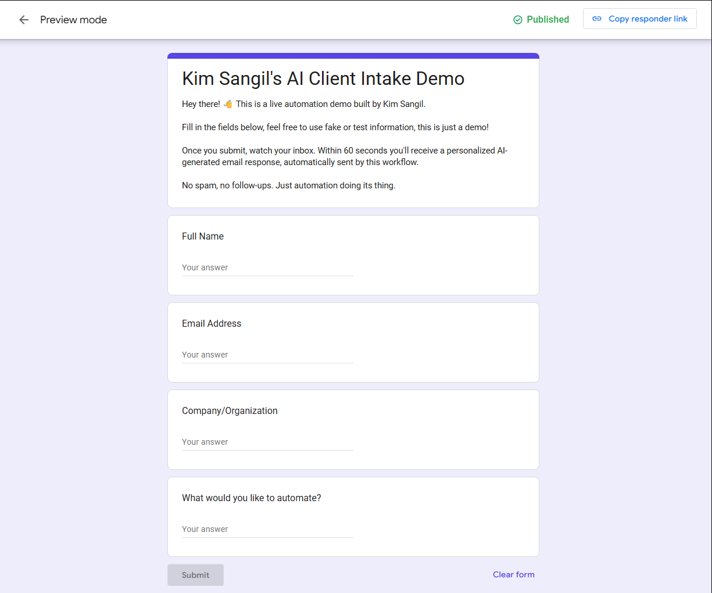
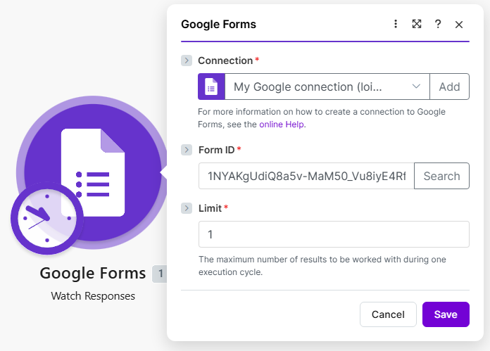
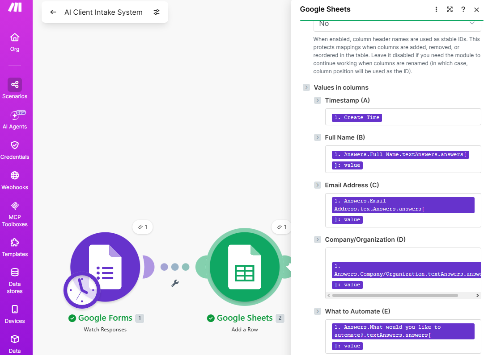
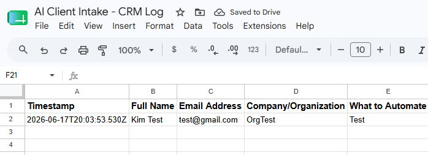
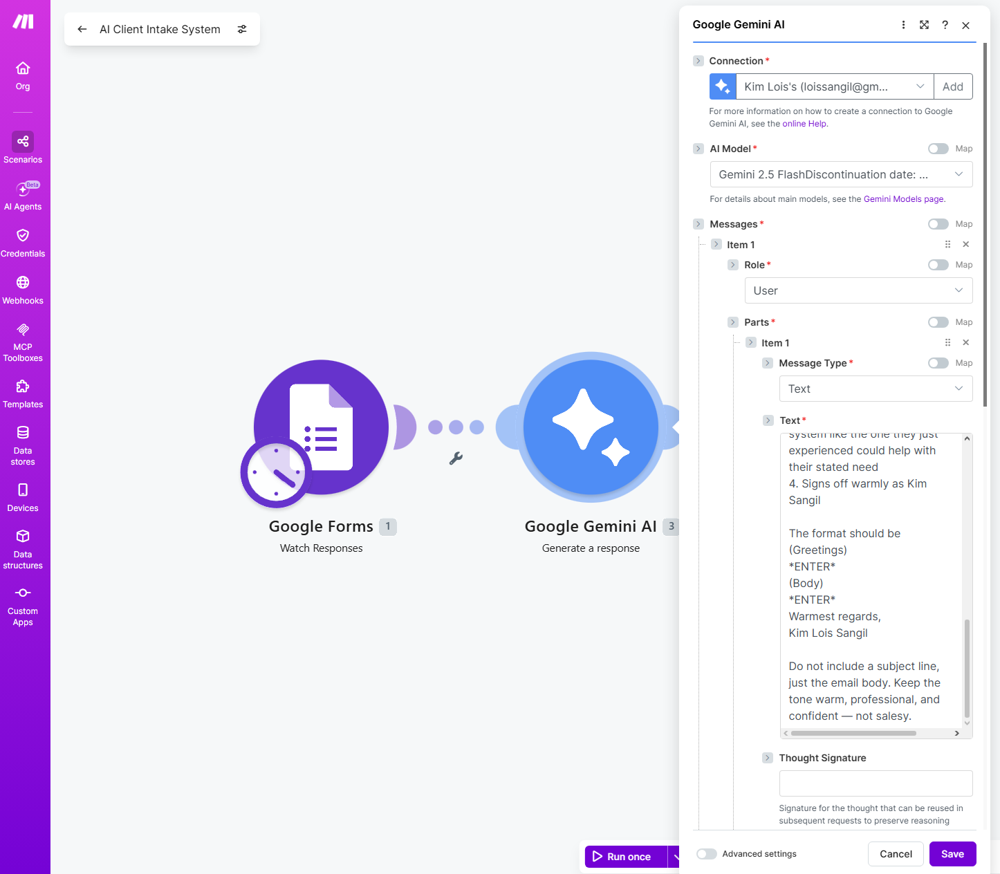
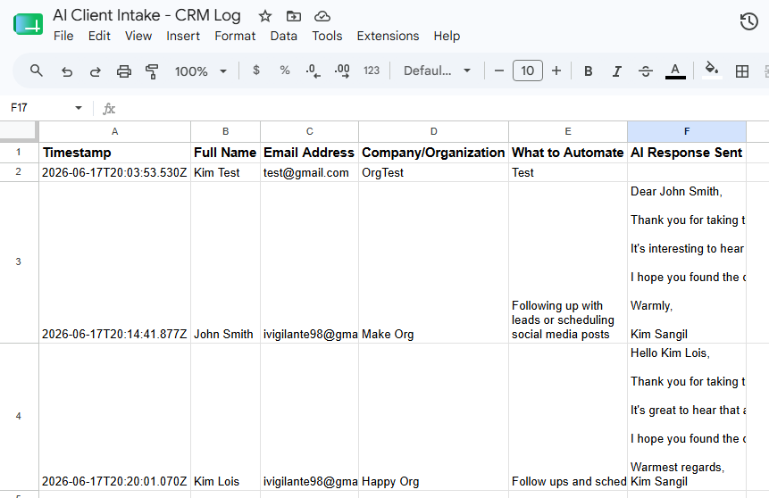
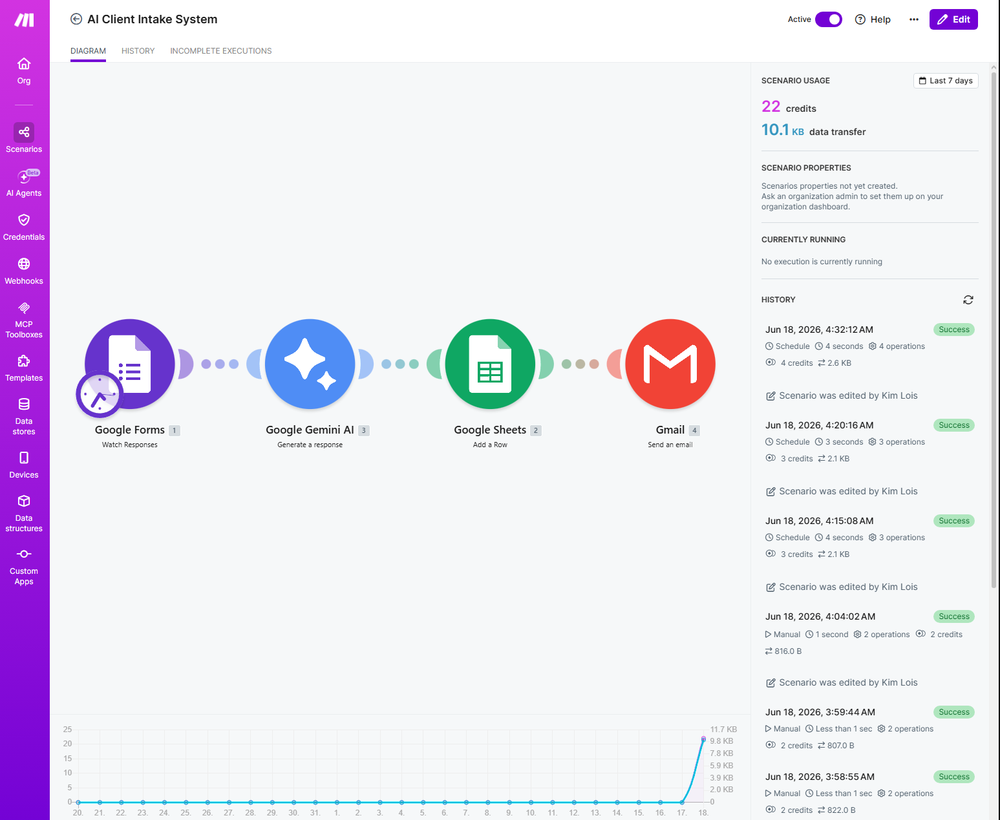
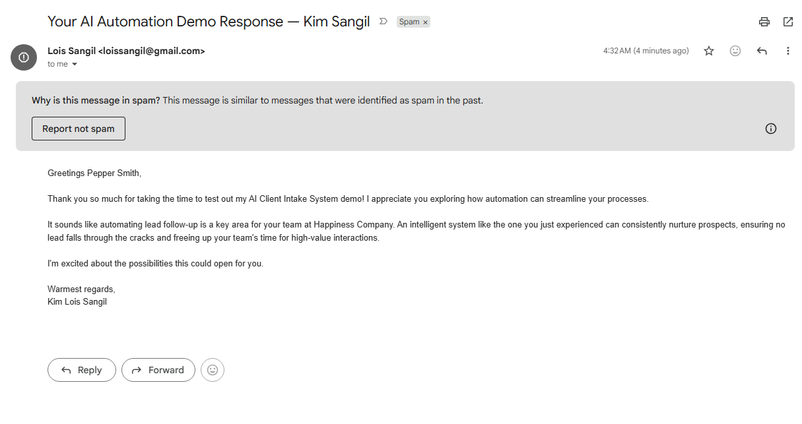

A fully automated client onboarding workflow. Submit the form below and within 15 minutes, receive a genuinely personalized AI-generated email response — automatically logged, written, and delivered with zero human involvement.
Fill this out with real or fake info — it's a live, working automation. Check your inbox (and spam folder) within 15 minutes.
A breakdown of every piece of this automation, from data entry to AI-generated delivery.
The process starts with a simple Google Form acting as the data entry point. It collects four pieces of information — name, email, company, and what the person wants automated — deliberately kept short so testers can complete it in under 30 seconds. No Google sign-in required, so anyone can test it freely.

Every form submission is caught by a Make.com scenario using the Google Forms "Watch Responses" trigger. On the free tier, this polls for new submissions every 15 minutes, then passes all the form data downstream to the rest of the workflow.

Each form field is dynamically mapped into a Google Sheet acting as a free CRM. Every submission becomes a permanent, timestamped record — exactly the kind of data logging real businesses rely on for tracking leads and inquiries.


This is where it gets interesting. A Gemini AI module receives the person's name, company, and stated automation need, then generates a genuinely personalized email — not a generic template. The prompt explicitly instructs the model on tone, length, and structure to keep every response professional and relevant.


Finally, a Gmail module sends the AI-generated text directly to the email address submitted in the form. No drafts, no manual sending — the entire chain from form submission to inbox delivery runs without anyone touching it.


I'm currently open to remote automation roles, freelance projects, and contract work.